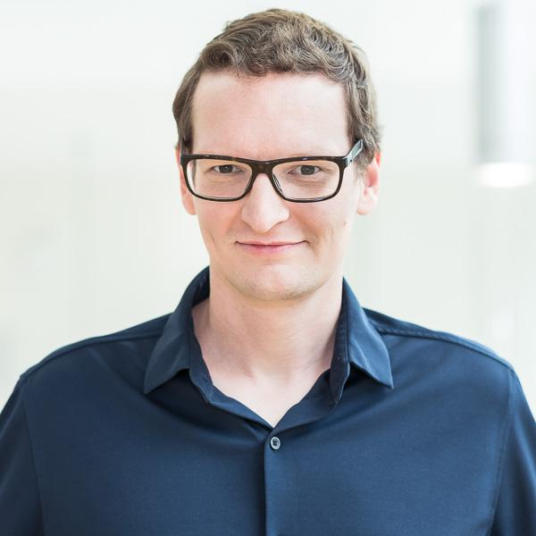
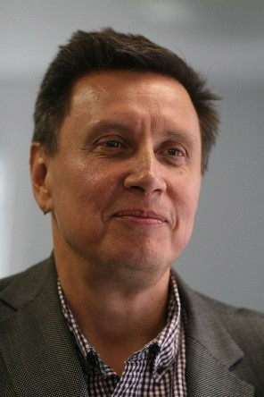

Oh What A Tangled Web We Weave - Securing ICS Networks
Nils Ole Tippenhauer
Faculty at the CISPA Helmholtz Center for Information Security
Abstract: Industrial Control System (ICS) networks connect devices such as Programable Logic Controllers (PLCs), Supervisory Data Acquisition and Control (SCADA), sensors, and actuators. Due to the lack of host and protocol security features, legacy systems often rely on airgapping to prevent attackers from accessing the network, and prevent them from arbitrarily manipulating the process and devices.
In this talk, we discuss reasons for this situation, and how to realistically introduce basic security features into such an environment. We provide an overview on recent offensive and defensive work for industrial protocols, their constraints on opportunities, and propose complementary approaches focusing on realtime monitoring of ICS.
Speaker Bio: Nils is a faculty at the CISPA Helmholtz Center for Information Security, heading the Secure Cyber-Physical Systems research group. Until 2018, Nils was an Assistant Professor at the Singapore University of Technology and Design (SUTD). He earned his Dr. Sc. in Computer Science from ETH Zurich (Switzerland) in 2012, as part of the System Security group led by Prof. Srdjan Capkun. Nils is interested in information security aspects of practical systems. In particular, he is currently working on security of industrial control systems and the Industrial Internet of Things, for applications such as public infrastructure (e.g., public water systems and power grids). At SUTD, Nils was involved in the construction and operation of several of our practical testbeds in those areas (SWaT, WADI, EPIC).
Urban Water Infrastructure: Challenges and Smart Solutions
Zoran Kapelan
Chair and Professor of Urban Water Infrastructure at Delft University of Technology
Abstract: The talk will start with introductory remarks about the urban water infrastructure and related challenges that these systems are facing now and in the future. The concept of smart water systems will be introduced afterwards. The main part of the talk will feature a number of smart water solutions that have been developed over the years, each addressing a specific real-life challenge. These solutions are typically based on the extraction of useful information from field sensors and other data sources by using Artificial Intelligence and Machine Learning type methods, combined with relevant engineering knowledge. One such example involves the award winning pipe burst/leak detection technology that is used companywide by a large UK water utility resulting in major operational cost savings. The talk will end with several important take home messages.
Speaker Bio: Prof Zoran Kapelan is leading the urban water infrastructure research at Delft University of Technology in the Netherlands. He is an IWA Fellow with over 30 years of research and consulting experience in water engineering. His research interests cover a wide range of issue across the urban water cycle with focus on smart water systems and related methods. Prof Kapelan has developed several AI-based technologies that have been used by water utilities resulting in major cost savings and other benefits. He has (co)authored over 450 technical publications and has given many invited talks around the world. Further information available at here.